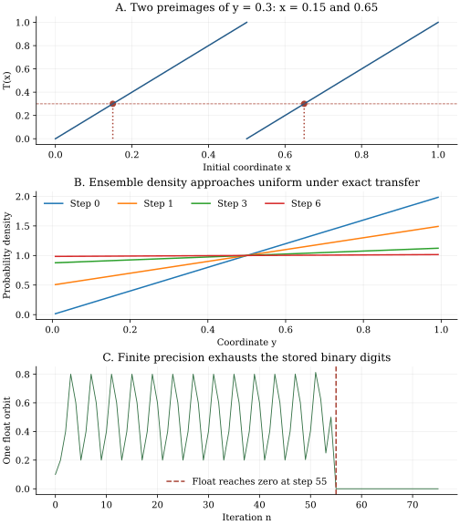

Chapter 24 · Lecture 28
Deterministic maps and invariant probability
A deterministic map fixes every future state once the initial point is known. An ensemble of uncertain initial points nevertheless has an evolving probability law. The doubling map makes the distinction exact: it transports a nonuniform density toward uniform, and its half-interval observations are independent fair bits under uniform initialization. A different partition of the same map retains memory. The probability law, the observation, and the arithmetic used to compute an orbit all matter.
The full caption track of lecture 28 was read sequentially. One low-resolution still at 31:22 was inspected; the invariant-density equation is partly occluded. The lecture's flow, coarse-graining, invariant-density and recurrence sequence supplies the spine. Explicit preimage calculations, symbolic counterexamples and the precision experiment are developed here. The pointwise ergodic theorem is cited with its measure-theoretic hypotheses; recurrence and the mean-return identity are distinguished in chapter 25.
24.1 Sample a flow without adding external noise L28 1:43
An autonomous ordinary differential equation $\dot x=f(x)$ specifies a state vector in phase space. Under local Lipschitz regularity, its initial-value solution is locally unique; restrict attention to an invariant domain on which solutions exist for all required times. Write $\Phi_t(x)$ for the state after elapsed time $t$. Uniqueness yields $\Phi_{s+t}=\Phi_s\circ\Phi_t$. Sampling every $\Delta t\gt0$ produces the deterministic map $T=\Phi_{\Delta t}$ and sequence $x_n=T^nx_0$. For a complete reversible flow each sampled map is invertible, but general discrete maps need not be. The doubling map below is a discrete model in its own right, not the full-state time map of such an invertible flow.
For a harmonic oscillator, $H=p^2/(2m)+m\omega^2q^2/2$ is constant and its nonzero-energy trajectories are ellipses of period $2\pi/\omega$. For two excited oscillators with an irrational frequency ratio, returning both phases exactly would require two integer periods with that ratio, which is impossible. Approximate simultaneous returns can still occur. Projected trajectories may cross in a position plot without violating uniqueness in full phase space. A recurrence question must specify a full state or a finite-resolution target and a sampling interval.
24.2 Probability follows inverse images L28 24:02
Let $\Omega$ be the state space, $\mathcal F$ its measurable sets, $\mu$ an initial probability measure, and $T:\Omega\to\Omega$ a measurable map. A target set $A$ is occupied after one step precisely when the initial point belongs to its inverse image $T^{-1}A=\{x:T(x)\in A\}$. Thus the transported or pushforward measure is $$ (T_*\mu)(A)=\mu(T^{-1}A).\tag{24.1}$$ The symbol $T^{-1}A$ denotes a set of preimages and does not require an inverse function. Countable additivity and total mass one follow because inverse images preserve disjoint unions and $T^{-1}\Omega=\Omega$.
A measure is invariant if $T_*\mu=\mu$, meaning $\mu(T^{-1}A)=\mu(A)$ for every measurable $A$. It gives stationary ensemble observations under that initialization. Invariance does not assert convergence to that measure from other initial laws, uniqueness, or that every trajectory samples it. A density $\rho$ relative to ordinary length satisfies $\mu(A)=\int_A\rho(x)dx$; some invariant measures have no such density.
Our running map is $T(x)=2x\pmod1$ on $[0,1)$, with normalized Lebesgue length measure $\mu$. For an interval $A=[a,b)$ its inverse image is $[a/2,b/2)\cup[(a+1)/2,(b+1)/2)$, two disjoint intervals of total length $b-a$. This proves length invariance on intervals and hence on their generated Borel sets. Yet the point mass at zero is also invariant because $T(0)=0$. It is singular relative to length. A stationary-density equation cannot detect every possible invariant measure.
24.3 Stretch each branch and count every preimage L28 27:14
For any bounded measurable test function $g$, the transported expectation is $\int g(T(x))\rho(x)dx$. Split the integral into the monotone branches. On each branch change variable $y=T(x)$; the magnitude of its inverse Jacobian is $1/|T'(x)|$. Summing the resulting integrals gives $\int g(y)(\mathcal P\rho)(y)dy$. Taking indicator functions identifies the density, and taking $g=1$ proves mass conservation. Nonnegativity is immediate from the formula. ∎
The equivalent distributional expression is $\rho_{n+1}(y)=\int\rho_n(x)\delta(y-T(x))dx$, with a Dirac delta. Its branch interpretation is essential: retaining just one inverse point would lose mass. An invariant density solves $\mathcal P\rho=\rho$ together with $\rho\geq0$ and $\int\rho=1$. The fixed-point equation alone neither guarantees existence nor proves attraction.
For doubling, $T'=2$ on both branches, so $$ (\mathcal P\rho)(y)=\tfrac12[\rho(y/2)+\rho((y+1)/2)].\tag{24.3}$$ The uniform density is fixed. Starting instead from $\rho_0(x)=2x$, substitution gives $\rho_1(y)=y+1/2$ and, by induction, $$\rho_n(y)=1+2^{-n}(2y-1).\tag{24.4}$$ Its distance from uniform in total variation is $\frac12\int_0^1|\rho_n-1|dy=2^{-n}/4$. Every finite-step density is normalized and nonnegative. This explicit convergence concerns that initial density; it cannot describe the invariant point mass at zero.
24.4 A deterministic orbit can reveal independent bits L28 22:53
Except for the countable ambiguity at dyadic rationals, write $x=0.b_1b_2b_3\ldots$ in binary. Doubling discards the first digit: $T(x)=0.b_2b_3\ldots$. Define the observation $Y_n=0$ in $[0,1/2)$ and $Y_n=1$ in $[1/2,1)$. Then $Y_n=b_{n+1}$. The initial point fixes this entire sequence, so there are no fresh random kicks. Randomness enters through the initial measure.
A word $c_1\ldots c_m$ fixes an integer $j=\sum_{r=1}^mc_r2^{m-r}$ and the initial interval $[j/2^m,(j+1)/2^m)$, apart from irrelevant endpoint representations. Its measure is $2^{-m}$, the product of $m$ fair-bit probabilities. Marginalizing unspecified digits proves independence for any finite collection of bit positions. ∎
Knowing only the observed past has revealed the discarded prefix, while the unknown tail remains uniformly distributed. Knowing the exact real initial point determines every future bit. These are different information conditions. The point $1/7$ has repeating binary digits and the exact period-three orbit $1/7,2/7,4/7$; that exceptional orbit does not disprove an almost-everywhere statistical statement under length measure.
24.5 Separate invariance, ergodicity, and mixing L28 35:45
For an invariant probability measure, a measurable set $A$ is invariant modulo null sets when $T^{-1}A$ differs from $A$ by a set of measure zero. The system is ergodic when every such set has measure zero or one. The pair of map and measure matters. The identity map preserves every probability measure but is not ergodic for a uniform continuum ensemble: every proper interval is invariant.
This theorem is not proved by displaying a stationary histogram. For the identity map and $g(x)=x$ under uniform measure, the time average is exactly $x$ for every duration, while the ensemble mean is $1/2$. More generally, disconnected invariant components can preserve a stationary global mixture even though an individual orbit never samples another component.
Mixing is the stronger decorrelation property $\mu(A\cap T^{-n}B)\to\mu(A)\mu(B)$ for measurable $A,B$. Doubling with length measure is mixing, as can be proved from the binary construction. First take $A$ and $B$ to be unions of finitely many dyadic intervals. Membership in each depends on a finite initial block of digits. For sufficiently large $n$, membership in $T^{-n}B$ depends on a disjoint later block. Proposition 24.2 gives exact factorization. For arbitrary measurable $A,B$, approximate each in measure by such finite unions. Invariance bounds the shifted approximation error by the original one; intersection and product errors together tend to zero with those approximation errors. This extends the factorization limit to all measurable sets.
Mixing implies ergodicity: for an invariant set $A$, $\mu(A\cap T^{-n}A)=\mu(A)$ at every $n$, so mixing gives $\mu(A)=\mu(A)^2$. The converse fails. A two-point space with uniform measure and map swapping the points is ergodic, since its only invariant subsets are empty and full. Its correlations alternate forever. The time average on either orbit is nevertheless the uniform two-point mean. Neither chaos nor mixing is required for the ergodic time-average conclusion.
24.6 A coarse partition can retain predictive memory
Now observe the same doubling map through $A=[0,3/4)$ and $B=[3/4,1)$. Under stationary uniform initialization, $$\Pr(Y_{n+1}=B\mid Y_n=A)=\frac{1/8}{3/4}=\frac16.\tag{24.6}$$ The numerator is the length of $A\cap T^{-1}B=[3/8,1/2)$. But conditioning also on $Y_{n-1}=B$ forces the intermediate coordinate into $[1/2,3/4)$; its next image lies in $[0,1/2)$, inside $A$. Therefore $$\Pr(Y_{n+1}=B\mid Y_n=A,Y_{n-1}=B)=0.\tag{24.7}$$ The conditioning history has positive probability $1/8$. The observation process is stationary but is not a first-order Markov chain. Deterministic evolution in the full state does not make arbitrary coarse cell labels sufficient predictive states.
One can always form one-step stationary conditional probabilities between cells. Multiplying that finite matrix repeatedly is an additional closure assumption unless the partition and conditional distributions justify it. In particular, replacing a density by its cell averages erases variations inside each cell. Under a map, those variations affect how much mass crosses each future boundary. A finite matrix transfer of cell-uniform approximations need not equal the exact cell masses of an evolving nonuniform density. The laboratory therefore evaluates actual inverse branches for (24.4), rather than silently imposing cellwise uniformity after each step.
24.7 Computational laboratory: ensemble transfer and finite precision
The lab computes the $2^n$ preimages of each of 64 cell midpoints and averages $\rho_0=2x$ over them with the exact Jacobian weights. The result is compared with (24.4). Midpoint integration is exact for these linear densities, so normalization and total variation can be tested to roundoff. Separately, all 4,096 equally spaced dyadic starting points are enumerated for three-bit words and the history-conditioned coarse probabilities. These finite indicator integrals are exact because every event boundary falls on the enumeration grid.
step=0: total variation=0.25000000 step=1: total variation=0.12500000 step=2: total variation=0.06250000 step=3: total variation=0.03125000 step=4: total variation=0.01562500 step=5: total variation=0.00781250 step=6: total variation=0.00390625 Three-bit cylinder counts (4096 initial points): [512, 512, 512, 512, 512, 512, 512, 512] P(next B | A)=0.16666667; P(next B | previous B, A)=0.00000000 Binary float starting at0.1 reaches zero at step55. Exact rational orbit: ['1/7', '2/7', '4/7'], period3.
Every stored binary floating-point number in $[0,1)$ is a dyadic rational with a finite binary expansion. Doubling shifts away one digit at a time until zero remains. This calculation uses multiplication by two and subtraction of an integer, so this digit-exhaustion effect is particularly direct. The stored approximation to decimal 0.1 reaches zero at step 55. Exact decimal $1/10$, by contrast, eventually cycles and does not reach zero, while the exact rational $1/7$ cycles from the start. Uniform real initial measure places probability zero on all rational points. Increasing run duration after a fixed precision has exhausted its digits gives a worse representation of a typical continuum orbit.

def doubling_transfer(rho, y):
return 0.5*(rho(y/2)+rho((y+1)/2))
print(doubling_transfer(lambda x: 2*x, 0.3))This function evaluates one regular density transfer and prints 0.8, up to floating-point representation; it has no file effects. Its input must be an evaluable density on the unit interval. The full lab writes JSON and its report, overwriting them on rerun, without network access. Run it before the generator with the declared packages. No long finite-precision orbit is used to prove ergodicity or mixing.
24.8 Formulate escape and recurrence before averaging L28 39:59
For a measurable target $C$ with $\mu(C)\gt0$, initialize with conditional invariant measure $\mu_C(A)=\mu(A\cap C)/\mu(C)$. The first exit is $\tau_{\mathrm{out}}=\inf\{n\geq1:T^nx\notin C\}$; the first positive return is $\tau_C^+=\inf\{n\geq1:T^nx\in C\}$. Infima of empty sets are infinity. Return at step one counts even if the path has not first exited. A return after departure is a different stopping event. The survival probability $\Pr(\tau_{\mathrm{out}}\gt n\mid x\in C)$ is a decreasing tail, not a probability mass to normalize by summing over $n$.
In a finite measure-preserving system, almost every point of $C$ returns to $C$; this Poincaré recurrence statement requires no ergodicity. Under ergodicity, the conditional mean positive return is $1/\mu(C)$, the Kac identity proved in the next chapter. Neither statement asserts that a trajectory hits every exact point or that return intervals are independent. A zero-measure target lies outside that conditional formula; measure zero alone does not prove absence of periodic or other exact returns. A stationary invariant density also need not be a long-time limit for every initial ensemble.
24.9 Exercises with worked solutions
Exercise 24.1 — A stationary atom (conceptual)
Does the normalized solution $\rho=1$ of the doubling-map density equation establish a unique invariant probability law?
Worked solution
No. The fixed point zero gives invariant point mass $\delta_0$, and each periodic orbit gives the uniform probability on that orbit. These are singular relative to length and have no ordinary integrable length density. The density equation describes only absolutely continuous laws, and its normalization does not exclude singular measures. Convex mixtures of invariant measures are invariant as well, by linearity of the pushforward. The proved attraction of $2x$ to uniform is a statement about a specified initial ensemble and cannot turn an atom at a fixed point into a density.
Exercise 24.2 — Independent symbols without random kicks (conceptual)
Explain why the fair-bit cylinder calculation and determinism do not contradict each other. Would the result remain true with an initial point chosen from $\{1/7,2/7,4/7\}$?
Worked solution
The cylinder law averages over uncertain initial digits under uniform continuum measure. Once all digits are fixed, their future order is fixed too; observing earlier digits does not reveal later independent digits under that ensemble. Uniform choice among the three rational points instead gives a stationary periodic symbolic process. A word such as three successive zeros has probability zero there, whereas the length-measure ensemble assigns probability $1/8$. The map is the same, but the initial invariant measure changes. Probabilistic independence is a property of joint laws under specified information, not a statement that the dynamical update contains external noise.
Exercise 24.3 — Generalize the branch calculation (derive)
For $T(x)=mx\pmod1$ with integer $m\geq2$, derive density transfer and evolve $\rho_0=2x$. Find the total-variation distance after $n$ steps.
Worked solution
The $m$ preimages are $(y+j)/m$, $j=0,\ldots,m-1$, each with derivative magnitude $m$. Thus $\mathcal P\rho(y)=m^{-1}\sum_j\rho((y+j)/m)$. Substituting $2x$ yields $2y/m+(m-1)/m=1+(2y-1)/m$, using $\sum j=m(m-1)/2$. The constant density is fixed, while the mean-zero linear perturbation is divided by $m$. Induction gives $\rho_n=1+m^{-n}(2y-1)$. Consequently total variation is $m^{-n}\int_0^1|2y-1|dy/2=m^{-n}/4$. Normalization remains one and the minimum density is $1-m^{-n}\geq0$. The contraction factor concerns this linear perturbation, not an assertion that every singular initial law converges.
Exercise 24.4 — Prove a transfer contraction (derive)
For integrable densities $\rho,\sigma$, prove $\|\mathcal P\rho-\mathcal P\sigma\|_1\leq\|\rho-\sigma\|_1$ for doubling. Does this inequality alone prove convergence to uniform?
Worked solution
Put $h=\rho-\sigma$. By the triangle inequality, the integral of $|\mathcal Ph|$ is at most $\frac12\int_0^1|h(y/2)|dy+\frac12\int_0^1|h((y+1)/2)|dy$. Changing variables turns these into the integrals over $[0,1/2)$ and $[1/2,1)$, whose sum is $\|h\|_1$. This is a nonexpansion bound with constant one, not a strict uniform contraction less than one. It alone supplies neither a convergence rate nor a uniqueness proof. Additional structure, such as explicit evolution for the chosen density or approximation by dyadic step functions, is needed. The latter functions become constant after sufficiently many exact transfers, and the same nonexpansion then extends convergence to general length-integrable densities by approximation; it still says nothing about singular measures.
Exercise 24.5 — Test a coarse Markov fit (compute/design)
A fitted two-cell chain uses the partition $A=[0,3/4)$, $B=[3/4,1)$ and one-step stationary frequencies. Compute its predicted probability for $B,A,B$ and compare with the map.
Worked solution
The initial probability of $B$ is $1/4$. Given $B$, its image is uniform over $[1/2,1)$, half of which lies in $A$, so $\Pr(A\mid B)=1/2$. The one-step fit has $\Pr(B\mid A)=1/6$. Its Markov product predicts $(1/4)(1/2)(1/6)=1/48$. In the actual map the event $B,A$ restricts the original point to $[3/4,7/8)$; after two steps the image is $[0,1/2)$, so the triple probability is zero. The discrepancy is exact, not a small-sample effect. A validation set should test history-conditioned transition probabilities and word frequencies, rather than checking only the stationary cell histogram and one-step matrix.
Exercise 24.6 — Diagnose a spurious attractor (compute/design)
A simulation of doubling reports that every orbit tends to zero. Design checks that distinguish numerical digit exhaustion from a property of the invariant length measure.
Worked solution
Record the exact stored starting value as a rational with denominator a power of two and count how many binary shifts erase it. The zero time should track the available finite digits. Repeat at greater arithmetic precision and compare with exact rational examples of odd denominator, such as the period-three $1/7$ orbit. Independently evolve an ensemble density using inverse branches and verify mass conservation and the analytic formula (24.4). For finite word statistics, integrate cylinder sets exactly or generate a sufficiently long random digit prefix, while labeling that method as sampling the initial measure rather than adding noise to each update. A finite grid remains a singular ensemble and cannot validate arbitrary infinite-time limits. The agreement of precision-dependent collapse with binary digit counts identifies the artifact; it does not deny that zero is a genuine exceptional fixed point.
24.10 Sources and attribution
- V. Balakrishnan, IIT Madras, lecture 28, NPTEL 115106089: flows, symbolic observations, invariant density, Frobenius–Perron evolution, and the recurrence problem.
- T. Tao, 254A Lecture 9: Ergodicity, 4 February 2008, Theorems 2 and 3: pointwise ergodic theorem and its ergodic specialization.
The pushforward and branch proofs, exact nonuniform density, binary-cylinder and mixing arguments, coarse-history counterexample, precision laboratory, original figure, and exercises are developed here. Neither the general pointwise ergodic theorem nor arbitrary nonlinear dynamics is claimed to follow from the laboratory. All return statements refer to a specified measure, target, and positive sampling time.